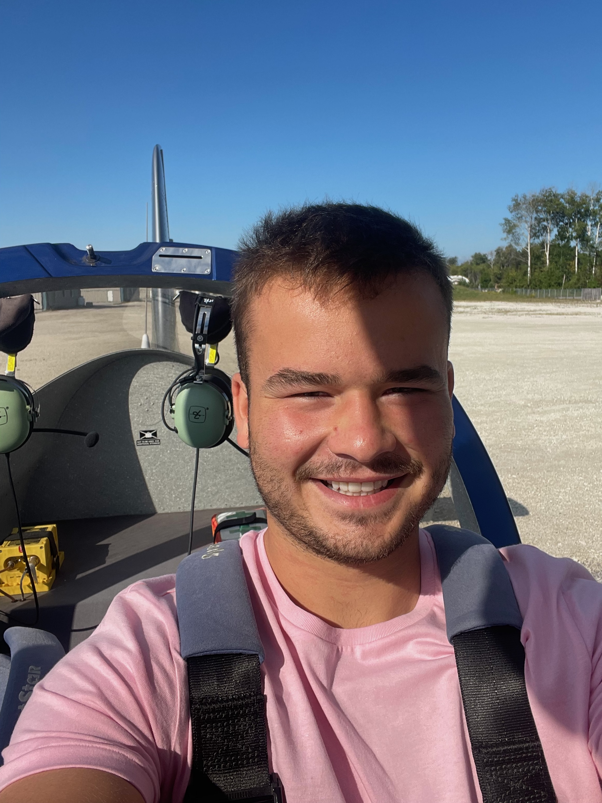
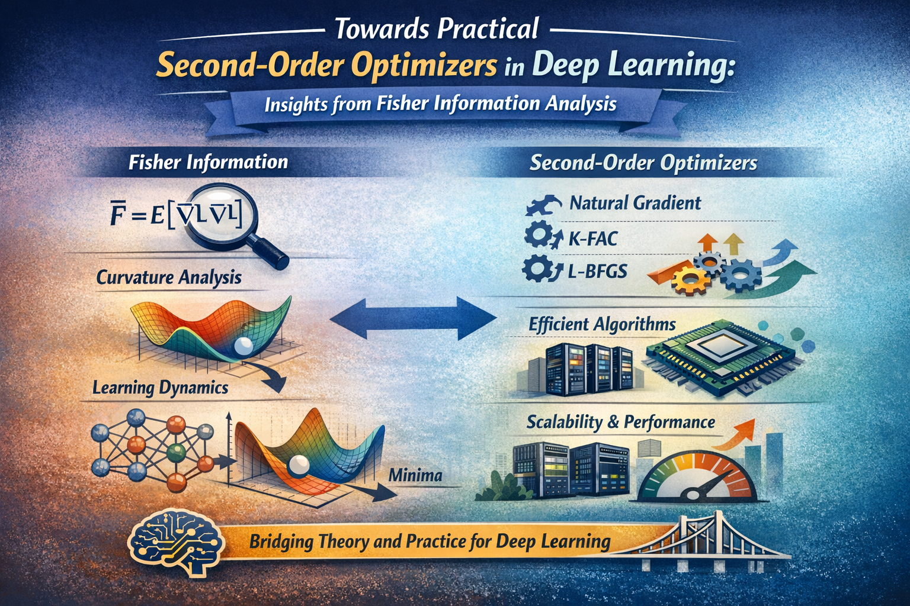
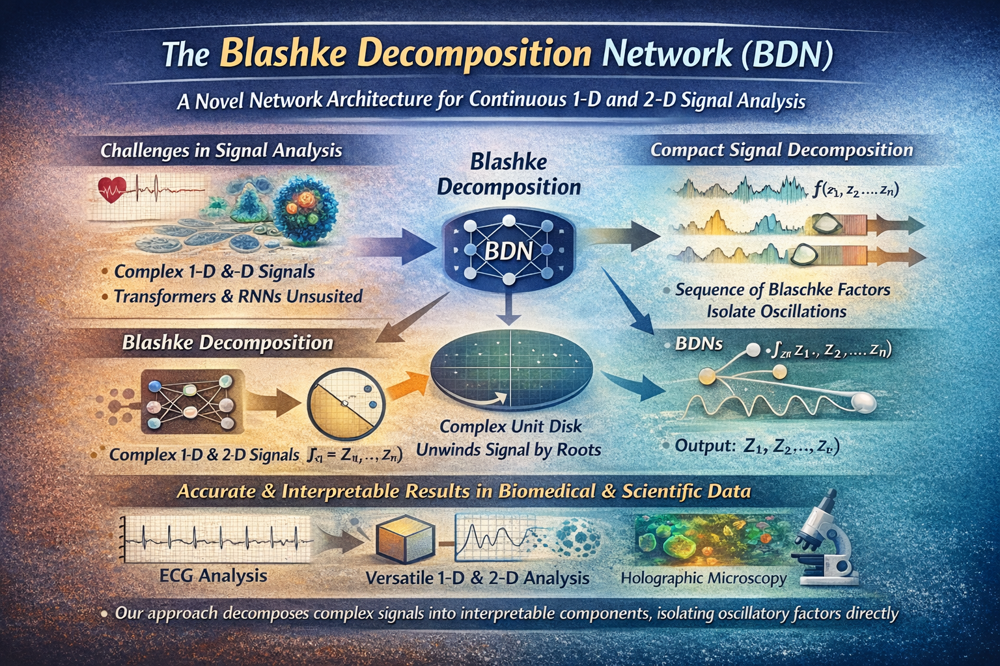

AI Scientist @ Thales

AI Scientist at Thales Research & Technology, I work at the intersection of deep learning and signal processing, designing intelligent audio systems under real-world constraints. My research spans speech enhancement, embedded and real-time models, as well as generative audio systems where efficiency, robustness, and reliability are critical.
I recently completed a research master's degree in Computer Science at Concordia University, alongside a dual degree in Aerospace Engineering specialized in Telecommunications at IPSA Toulouse. This interdisciplinary background allows me to bridge physical systems, signal processing, and modern machine learning to tackle complex, high-impact problems.
Previously at Mila – Quebec AI Institute, I developed AdaFisher, a second-order optimization algorithm accepted at ICLR 2025. Driven by curiosity and a strong research mindset, I enjoy turning raw signals into intelligent systems and exploring how AI can robustly perceive and understand the world—one waveform at a time.
MCompSc: Master of Research in Optimization and Machine Learning
September 2023 — April 2025
CGPA: 4.1/4.3Thesis awarded with "Outstanding" distinction
MSc in Aerospace Engineering: Embedded Systems and Signal Processing
September 2019 — April 2025
CGPA: 3.8/4.0Obtained with "Outstanding" distinction
AI Scientist
May 2025 — Now
AI/ML Research Student
September 2023 — April 2025
AI/ML Research Collaborator
September 2024 — January 2025
Machine Learning Engineer
June 2023 — August 2023
Commander / Analog Astronaut
June 2021 — September 2021
We propose AdaFisher, a novel second-order optimizer that integrates Fisher information into the Adam family. AdaFisher achieves consistently faster convergence and improved generalization compared to Adam, AdamW, AdaHessian, and Shampoo across image classification and language modeling tasks, while remaining computationally efficient.

This thesis investigates the dynamics of deep learning optimization and the trade-offs between convergence speed, stability, and computational efficiency. It provides a unified analysis of zeroth-, first-, and second-order optimization methods, with a particular focus on curvature-aware approaches. The work culminates in a detailed theoretical and empirical study of AdaFisher, the optimizer introduced in my ICLR 2025 paper.

We introduce Blaschke Decomposition Networks (BDNs), a novel neural architecture for learning from continuous real-valued and complex-valued 1-D and 2-D signals—data modalities that are poorly matched to conventional transformers, convolutional, or recurrent networks. BDNs leverage the Blaschke decomposition to iteratively “unwind” a signal into interpretable oscillatory components defined by its roots in the complex unit disk. The network is trained to predict these roots directly, yielding compact, interpretable representations. We extend the framework from 1-D signals to 2-D data via a wedge-based factorization. Experiments on biomedical sensor data, including electrocardiograms and phase holographic microscopy, demonstrate strong predictive performance with significantly fewer parameters than existing architectures.
2024 — 2025
2023 — 2024
2023 · Outstanding athletic performance
Thales Research & Technology
1 Avenue Augustin Fresnel
Palaiseau, 91120, France